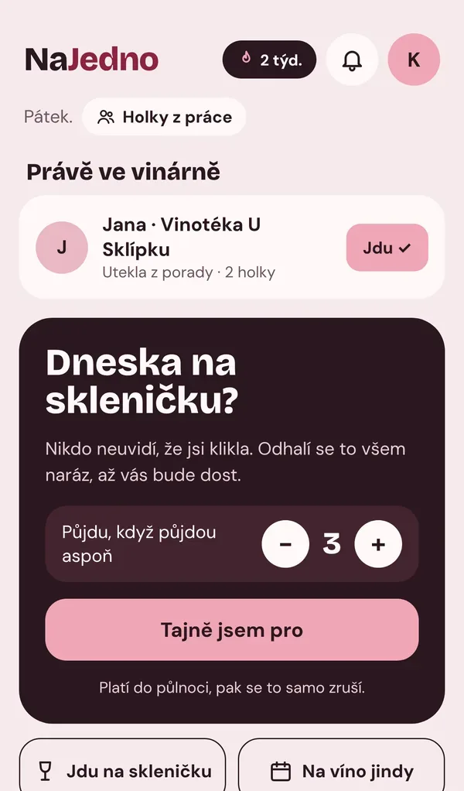
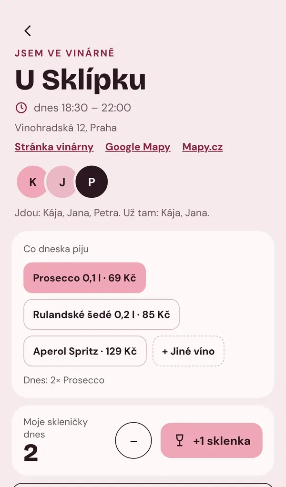
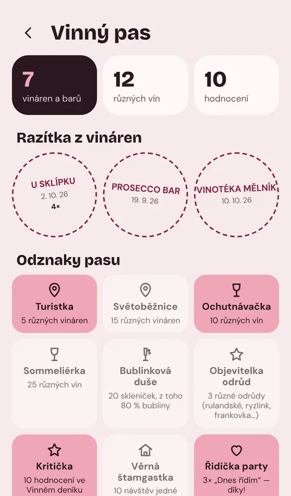

Vlastní aplikace · běží pro partu přátel
NaJedno
Appka pro partu, která chce zajít na jedno. Nikdo neví, že jsi klikl. Odhalí se to všem naráz, až vás bude dost. Pak už jen vybrat hospodu a jít.



Snímky z návrhu vinné verze appky. Pas a odznaky jsou zatím jen v návrhu.
- hlasování s kvórem
- tajné
- čárky a lístek pro celou partu
- realtime
- oznámení do mobilu
- push
- běží pro partu přátel
- v0.2
Zadání
Půjde někdo?
-
Nikdo nechce být první
V chatu se nikomu nechce psát „půjdu“, když neví, jestli půjde i někdo další.
-
A kam vlastně?
Domluva o hospodě a čase se v chatu ztratí mezi ostatními zprávami.
NaJedno má tajné „jsem pro“ s kvórem: každý klikne potichu a odhalí se to až ve chvíli, kdy vás je dost. Pak parta hlasuje o hospodě.
Co jsem postavil a jak to pomáhá
Co NaJedno umí
-
Tajné „jsem pro“
Půjdu, když půjdou aspoň tři. Dokud není kvórum, nikdo neví, kdo klikl.
Nikdo nemusí být první.
-
Hlasování o hospodě
Parta vybere podnik a potvrdí, kam se jde.
Žádné dohadování v chatu.
-
Check-in „Jsem tu“
Kdo už sedí, dá vědět jedním klepnutím.
Ostatní vědí, jestli můžou přijít.
-
Lístek a čárky
Nápojový lístek a čárky v reálném čase pro celou partu.
Na konci je jasné, kdo co měl.
-
Fotky a avatary
Fotky z akce včetně formátu z iPhonu a avatary pro každého.
Vzpomínky zůstanou u party.
-
Upozornění do mobilu
Oznámení, když se parta schází nebo když padne kvórum.
Nic vám neuteče.
Technologie PWA · realtime · push oznámení
Další projekty
Co jsem postavil dál
Spolupráce
Máte nápad na aplikaci?
Rád pomůžu z nápadu udělat aplikaci, kterou budou lidé opravdu používat.
- Stav Běží pro partu přátel, verze 0.2
- Pro partu, co chce zajít na jedno
- Dál chystám verzi pro všechny